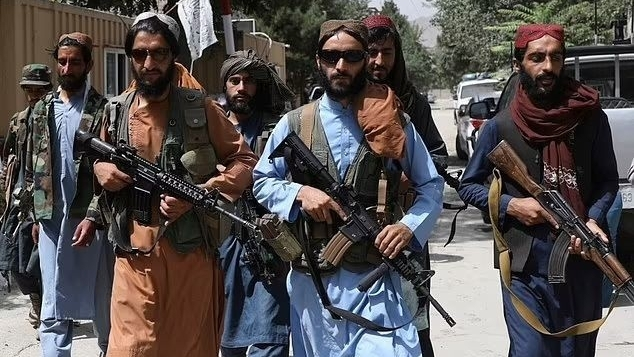
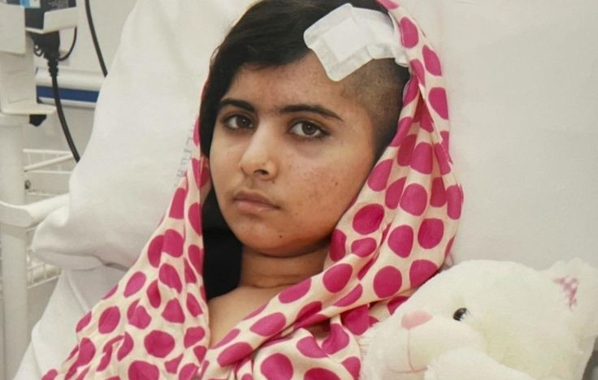
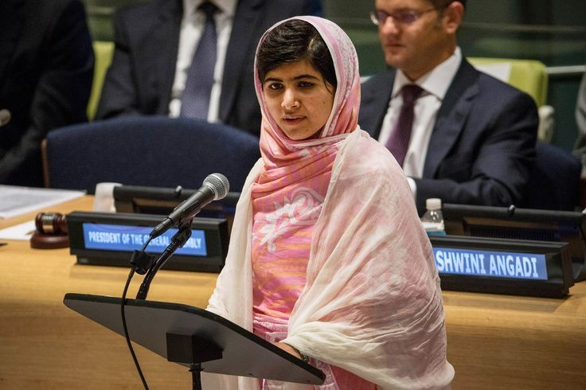
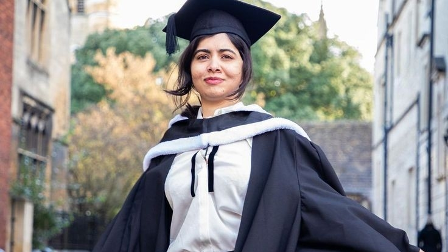
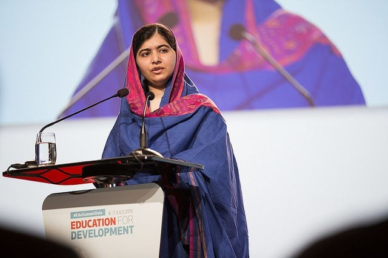

| O atentado de Malala Yousafzai | ||||||||
|  | ||||||||
|  | A vida de Malala mudou drasticamente em 9 de outubro de 2012. Naquele dia, ela estava voltando da escola quando homens armados pararam o ônibus em que ela estava e atiraram em sua cabeça. O ataque foi uma represália às suas campanhas públicas pelo direito das meninas à educação, algo que o Talibã veementemente se opunha. | |||||||
| Malala foi inicialmente levada a um hospital local, mas devido à gravidade de seus ferimentos, foi transferida para um hospital militar em Peshawar e, posteriormente, para o Reino Unido, onde recebeu tratamento especializado no Hospital Queen Elizabeth, em Birmingham. A cirurgia delicada e o tratamento intensivo salvaram sua vida. |  |
|||||||
| A recuperação de Malala foi lenta e dolorosa, mas sua determinação e espírito indomável inspiraram milhões de pessoas ao redor do mundo. Após se recuperar do ataque, Malala não desistiu de sua missão. Em vez disso, sua voz se tornou ainda mais potente e influente. Em 2013, ela fundou o Fundo Malala. | ||||||||
| Fundação do Fundo Malala | Estudos em Oxford | Ativismo Global | ||
| Em 2013, Malala fundou o Fundo Malala, uma ONG que trabalha para garantir 12 anos de educação gratuita, segura e de qualidade para meninas em todo o mundo. | Malala concluiu o ensino médio no Reino Unido e ingressou na Universidade de Oxford, onde estudou Filosofia, Política e Economia. | Durante seus estudos, Malala continuou a participar de eventos internacionais e a se envolver ativamente em campanhas pela educação. | ||
|  |  |  |